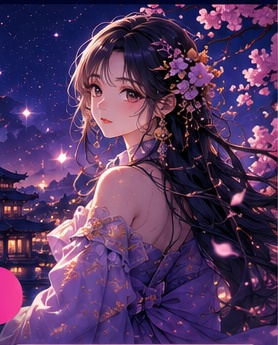

오늘의 운세 & 심리테스트
오늘의 운세로
당신의 하루를 더 특별하게
운세와 심리테스트로
당신의 마음을 들여다보세요
지금 인기 테스트
광고 영역
오늘의 운세 한눈에 보기
나의 오늘 운세를 확인해보세요
생년월일을 입력하면 나에게 맞는 오늘의 운세를 보여드려요.
오늘의 운세
나의 운세를 확인해보세요
생년월일을 입력하면 오늘의 운세를 계산해드려요.

운명적인 사랑이
기다리고 있을지도 몰라요
홈
심리테스트
재미있고 정교한 테스트로 당신의 마음을 들여다보세요
광고 영역
홈
오늘의 운세
오늘 하루의 흐름을 가볍게 확인해보세요.
작은 선택 하나가 오늘의 분위기를 바꿀 수 있어요. 서두르기보다 눈앞의 기회를 차분히 살펴보세요.
뒤로
오늘의 운세
전체운
금전운
연애운
오늘의 조언
홈
별자리 운세
오늘의 별자리 흐름을 확인해보세요.
심리테스트
감성적인 로맨티스트
감성적로맨틱배려심이상주의